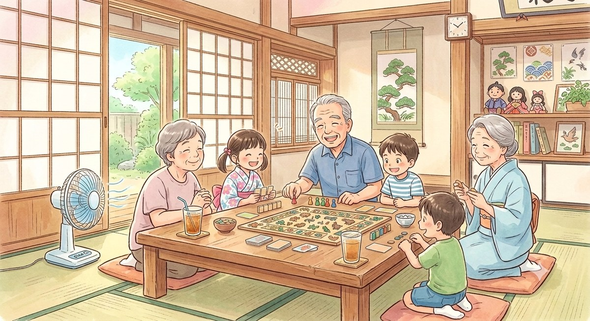

ボードゲームを囲んで、おじいちゃんも、子どもも、みんな笑ってる。
年齢のちがう人どうしが、自然と『友達』になれる場所。
朝、おじいちゃんおばあちゃんがふらっと集まってきて、お茶を飲みながらボードゲームや編み物。学校が終わると、子どもたちが「ただいま！」って入ってきて、宿題したりみんなで遊んだり。
シニアが子どもにジェンガを教えたり、子どもが「これなに？」って編み物をのぞき込んだり。年齢も立場も関係なく、同じテーブルで笑い合う。そんな『大きなリビング』が、街の真ん中にあったらいいな。
17時の鐘が鳴ったら、子どもは「またね」と帰っていく。それまでの数時間、家でも学校でもない、第3の居場所。それがコトノハです。
家にいる時間を、笑い声のある場所に。子どもに頼られる『役割』が、新しい生きがいになります。
放課後の温かい居場所。地域に「自分を認めてくれる大人の目」が増える、最高の安全基地。
顔が見える関係が増えること。それは、認知症予防、孤立防止、そして子どもの安全につながります。
世代を超えた共通言語。ルール覚えたらみんな対等。
大人も子どもも本気になる、昔ながらの遊び。
シニアの『おばあちゃんの知恵』が、そのまま教材。
『分からん』を聞ける大人が、いつもそばに。
これからのAI時代、知識の詰め込みや勉強はAIがすべて代替してくれます。だからこそ、これから子どもたちに最も必要とされる能力は、テストの点数ではなく『人と目を見て関わり、信頼関係を築くコミュニケーション能力（非認知能力）』です。
コトノハは、スマホやゲーム機の画面から離れる『デジタルデトックス』の場。人生の先輩であるシニアと対等にルールの中で泥臭く遊ぶことで、
社会を生き抜くために一番大切な人間力を、遊びながら自然に育みます。
みんなが笑っていて、孤独のない平和な世界を作りたい。
私自身が将来老人になった時に、こんな温かい居場所があれば最高に幸せです。
人間は、一人では生きていけないから。